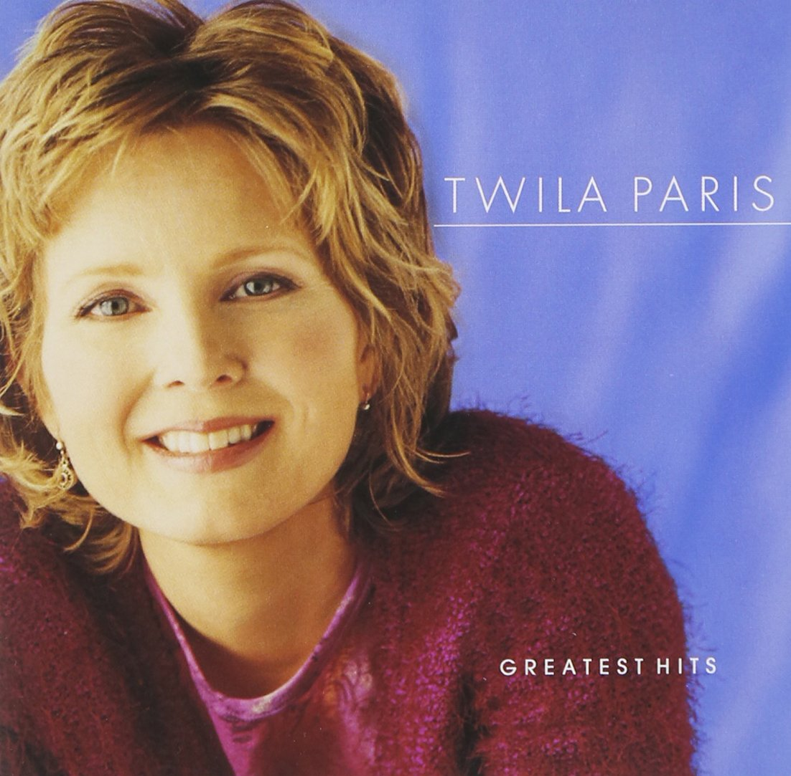

|
|
【祂已被尊崇】[粵語] |
|
He is exalted |
祂已被尊崇，祂名稱為至高君王， |
|
http://www.sooopu.com/sooopuupload/zanmeishi/0brx3u4kpad.jpg
|
|
|
|
|
{kind=link}

祂已被尊崇 He is Exalted - 第六屆聖詩頌唱會 https://youtu.be/rc0P6YgmL2Y - He Is Exalted - Instrumental (HQ)
https://youtu.be/pcBpfGVzSfw -
https://youtu.be/vUq4QDrtEjY -
| Text: | He Is Exalted |
| Author: | Twila Paris |
| Tune: | HE IS EXALTED |
| Composer: | Twila Paris |
特維拉·芭黎絲 (Twila Paris)

296. He Is Exalted
| Text Information | |
|---|---|
| First Line: | He is exalted, the King is exalted on high |
| Title: | He Is Exalted |
| Author: | Twila Paris |
| Refrain First Line: | He is the Lord; forever His truth shall reign |
| Meter: | Irregular meter |
| Language: | English |
| Publication Date: | 2008 |
| Topic: | Jesus, His Name; Jesus, Lordship |
| Copyright: | © Copyright 1985 Mountain Spring Music (ASCAP)/Straightway Music (ASCAP) (both admin. by EMI CMG Publishing) All rights reserved. Used by permission |
| Tune Information | |
|---|---|
| Name: | HE IS EXALTED |
| Composer: | Twila Paris |
| Meter: | Irregular meter |
| Key: | F Major |
| Copyright: | © Copyright 1985 Mountain Spring Music (ASCAP)/Straightway Music (ASCAP) (both admin. by EMI CMG Publishing) All rights reserved. Used by permission |
| Short Name: | Twila Paris |
| Full Name: | Paris, Twila, 1958- |
| Birth Year: | 1958 |
Twila Paris 1958- Wikipedia,
|
Twila Paris
|
|
|---|---|
| Born | Fort Worth, Texas, U.S. |
| Genres | Contemporary Christian |
| Occupation(s) | Singer |
| Instruments | Voice, piano |
| Years active | 1965, 1980–present |
| Labels | Milk and Honey, Star Song, Benson, Sparrow, INO, Mountain Spring |
Twila Paris (born December 28, 1958, in Fort Worth, Texas) is a contemporary Christian music singer, songwriter, author and pianist. Since 1980, Paris has released 22 albums, amassed 33 number one Christian Radio singles, and was named the Gospel Music Association Female Vocalist of the Year three years in a row. Many of her earlier songs such as "He Is Exalted", "We Will Glorify", "Lamb of God", and "We Bow Down", are found in church hymnals or otherwise sung in church settings. She was inducted into the Gospel Music Association Hall of Fame in May 2015.[1]
Career[edit]
As a child she released her first album, Little Twila Paris, in 1965. The album included songs drawn from among those she sang with her family in their evangelistic outreaches.
Paris released her first full-length album, Knowin' You're Around, in 1981, and along the way she has written books, recorded children's music, and created worship songs.
In the 1980s and 1990s, Paris released mainly contemporary Christian pop songs. But in recent years, she has focused on recording new versions of some of her worship standards and writing new praise and worship music. Her 2005 album He Is Exalted: Live Worship collects a number of favorite songs commonly used in praise and worship of Paris's and presents them in a more typical style of live worship music. After her song "He Is Exalted" was used in churches in Brazil, Paris re-recorded it in the Portuguese translation they were using. This version appears on her 1992 album Sanctuary. Sanctuary won the GMA Praise & Worship Album of the Year, and in 1995, her song "God Is In Control" won a GMA Song of the Year award. She has won five GMA Dove Awards and three American Songwriter Awards.
Although associated for much of her career with Star Song Communications, EMI switched her to Sparrow Records in 1996, before her contract ended after 2003. In 2005, she switched to the praise and worship label Integrity Music for He Is Exalted: Live Worship.
Paris released Small Sacrifice on December 26, 2007, which was available only through her Web site and at Lifeway Christian Stores. This album married the two parts of her career by including both inspirational pop/adult contemporary songs and original praise and worship compositions. Her first radio single from Small Sacrifice was "Live to Praise". Small Sacrifice was released for wider distribution by Koch Records on February 24, 2009.
In 2012, Paris released a patriotic-themed project that includes two new cuts ("God of Our Fathers" and "America the Beautiful") and ten cuts that Paris hand-picked from other projects. The purpose of the project is to inspire patriots with themes of God's protection and love, even in difficult times.
From 2011 to 2012, Paris was part of the Christian Classics Tour, joining artists Steve Green, Wayne Watson, Larnelle Harris and Michael Card.[2]
Legacy[edit]
Paris has created a body of work in a modern hymn style. Her compositions are included in hymnals used by several Christian denominations[3] and various Charismatic churches.[4] Kelly Willard and Jamie Owens-Collins sang background vocals for her on her Keeping My Eyes On You album and sang as a trio on the hymn "Leaning on the Everlasting Arms" on The Warrior Is a Child.
Personal life[edit]
Twila Paris is the daughter of Oren Paris II, the son of travelling late 19th and early 20th century street preachers and his wife Rachel Inez Paris. In the late 1970s, Oren Paris II founded a Youth With A Mission (YWAM) base in Elm Springs, Arkansas. Oren II is the cousin of YWAM founder, Loren Cunningham.
After Oren II's passing, his son Oren III, claimed his father as the founder and Chancellor of Ecclesia College in Springdale, Arkansas, which operates on the former physical grounds of the Elm Springs YWAM base.[5][6] In 2017, Twila Paris defended her brother Oren III after he was indicted for participating in a kickback scheme as Ecclesia's president, stating, "Those who know him [Oren III] well know that he is a man of deep integrity with a long established record of exemplary character. It is very clear that his highest aim is always to please God."[7] In 2018, Oren III received a three-year prison sentence for the kickback scheme.[8]
Twila Paris married her manager Jack Wright in 1985. Paris indicated in an interview that Wright had contracted the Epstein-Barr Virus (EBV) causing him chronic fatigue.[9]
Paris and Wright have a son.[10]
Politics[edit]
Paris endorsed Ted Cruz in the 2016 Republican presidential primary, saying that "he is a leader we have been praying for."[11]
https://en.wikipedia.org/wiki/Twila_Paris